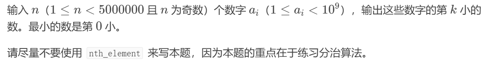

洛谷P1923（分治算法）
暑假很闲，有时候在洛谷上写一些普及难度的算法题。一天我的一个朋友让我去看一下P1923，他说这个 题目很有意思。
题目放在下面：
我当时就想到了python的sort，所以我就用pytho n写了这个题目，本以为直接秒了。
结果，不出意外，这样做出了意外，限制为250Mb的运行内存爆掉了。
于是我开始尝试自己写，最后思路如下：
这个问题主要当然是排序，于是我的程序大概就是 先找出数组中最大的数字，然后把它填入一个新的数组，并把原数组中的这个元素改为-1，这样就相当于删除了这个元素（因为输入的元素都大于零），不会影响后面 第二大的值的寻找，接下来再找出原数组中的最大的值，也就是第二大的值，再填入新数组，接着就是循环啊， 不断地把第三大，第四大的按顺序填入新数组，这样新 数组就是一个排好顺序的原数组，然后再找目标数字就 很容易了，源代码如下：
#include
int max(int total, int arr[total] ) {
int max = arr[0];
for(int i = 1; i < total; i++){
if(max < arr[i]){
max = arr[i];
}
else{
continue;
}
}
return max;
}
int main() {
int n, k;
scanf("%d %d", &n, &k);
int num_arr[n];
for(int m = 0; m < n; m++) {
scanf("%d", &num_arr[m]);
}
int num_arr_sorted[n];
for(int q = 0 ; q < n; q++) {
int max_num = max(n, num_arr);
num_arr_sorted[q] = max_num;
for(int j = 0; j < n; j++){
if(num_arr[j] == max_num) {
num_arr[j] = -1;
}
}
}
k = n - k - 1;
int answer = num_arr_sorted[k];
printf("%d\n", answer);
printf("%d", num_arr_sorted);
return 0;
}
可惜这个程序套了太多的循环，超出了时间限制， 无奈我只好去查看题解，看了之后深感题解的思路太 巧妙了，本质也是快排，但是题解在快排的同时还有一个 操作，就是只对答案所在的区间的一部分排序，这样就 大大节省了运行内存和时间，代码我就不复制了，题解 的传送门在下面：
https://www.luogu.com.cn/problem/solution/P1923